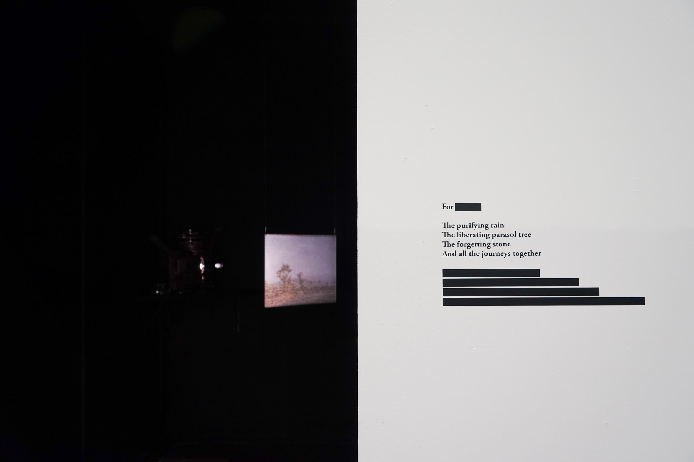
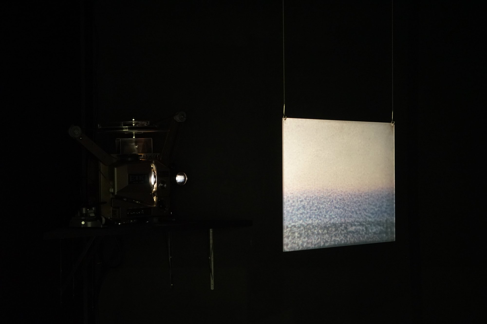
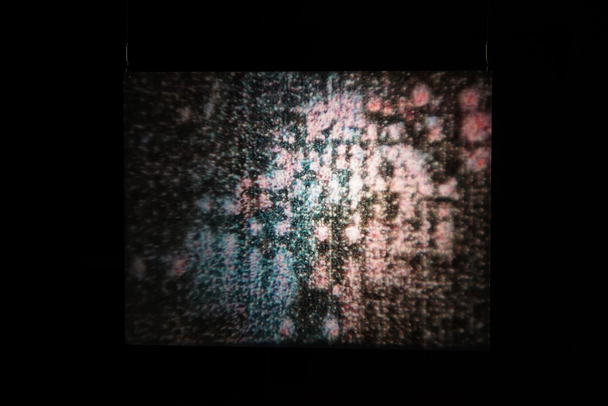

EVERYTHING COMES FULL CIRCLE
Following Wim Wenders' Paris, Texas (1984) filming locations from Houston, Texas to Los Angeles, California, I use a 16mm Bolex camera to capture the vastness of the American West. The footage draws me to reminisce about snippets of my everyday life. I contemplate how we perceive the world through analog optical apparatuses and how memories are multidimensional yet fragile. Our recollections of people and places can be distorted, unrecognizable, and fictitious. These memories would eventually diminish with the passing of time. Everything Comes Full Circle is a personal attempt to remember things that will soon be forgotten.
The original footage was shot in Kodak 16mm film stocks during the summer of 2021 and edited digitally with voiceover. Later the digital moving images were inkjet printed on clear film spliced together with perforations cut out with a laser cutter. Each run of the projection makes the printer ink slowly melt, and the film will eventually fall into decay over the course of time.



Exhibition photos from 2022 Grad Show at RISD
Film transfer with DSLR + Optical printer